Задачи CRM — это особый вид задач, которые помогают организовать работу менеджеров по продажам с лидами, сделками, компаниями и т. д. Любую задачу, связанную с продажами — телефонный звонок, встречу, письмо, вебинар и т. д. — можно запланировать и просмотреть в ELMA365. Вы сможете отслеживать этапы работы с элементом приложения и просматривать все завершённые и текущие задачи.
начало внимание
Задачи доступны при активации одного из платных решений CRM, в которые включена работа с задачами CRM. Назначать и выполнять задачи могут только пользователи с лицензией такого решения.
конец внимание
Все задачи CRM отображаются в карточке элемента, по которому они назначены. Кроме того, их можно просматривать в календаре и в разделе Задачи > Входящие. Также можно отображать задачи CRM отдельно от прочих входящих задач. Тогда в разделе появится группа Задачи CRM, куда будут попадать созданные звонки, встречи, письма, вебинары и т. д.
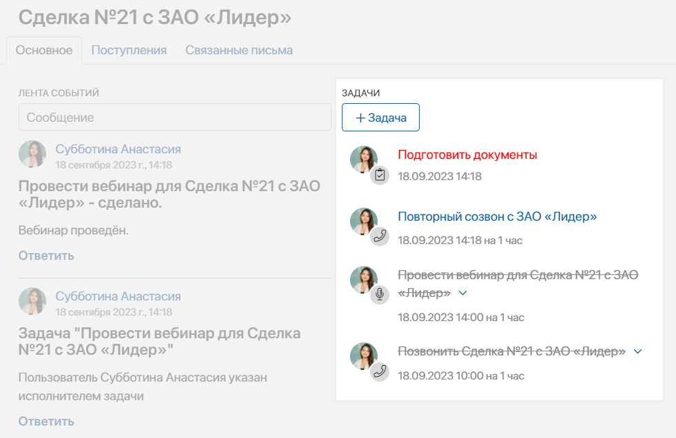
По умолчанию в системе доступны задачи CRM Звонок, Письмо, Встреча и Вебинар. Администратор системы может изменять преднастроенные типы задач и создавать новые, а также делать задачи CRM доступными для элементов любых приложений системы. Подробнее читайте в статьях «Создание пользовательского типа задач CRM» и «Настройки задачи CRM».
Назначение и исполнение стандартных задач CRM по умолчанию фиксируется в системе и записывается в историю активностей по контакту. Это помогает легко отслеживать взаимодействие менеджеров по продажам с клиентами. Также эта информация используется для определения готовности клиента к покупке, то есть его стадии прогрева.
Как назначить задачу CRM
Создать задачу можно двумя способами:
- В карточке элемента приложения, для которого доступно создание задачи CRM, нажмите кнопку + Задача.
- В разделе Задачи > Задачи CRM нажмите кнопку + Задача. Если на странице включён режим отображения Календарь, дважды нажмите на ячейку с датой начала исполнения задачи.
В открывшемся окне добавления задачи задайте её параметры:
- При создании задачи CRM в разделе Задачи выберите приложение, например, Сделки, и укажите элемент, по которому ставится задача.
- Выберите из выпадающего списка тип задачи:
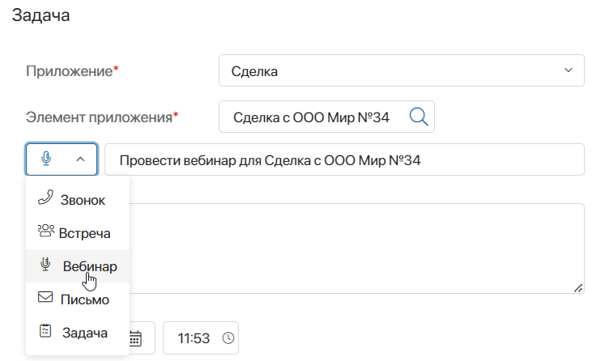
Название задачи устанавливается автоматически. Его можно изменить.
- Введите информацию о задаче. Обратите внимание, в зависимости от типа задачи список опций различается.
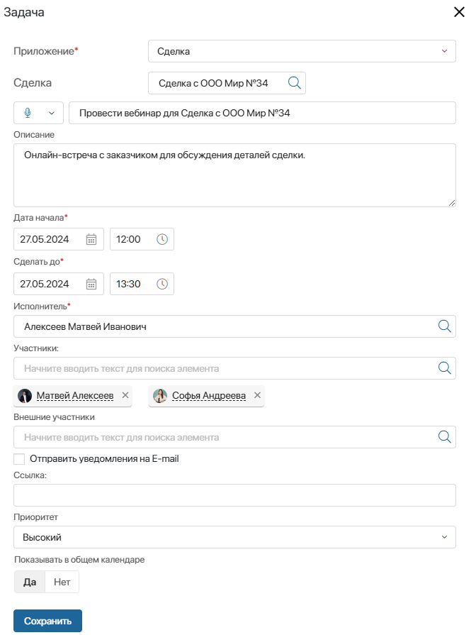
- Описание — добавьте развёрнутое описание задачи, чтобы просматривать цели звонка, встречи и т. д.;
- Дата начала*, Сделать до* — установите срок выполнения задачи. По окончании заданного срока задача станет просроченной;
- Исполнитель* — по умолчанию ответственным за выполнение задачи CRM назначается текущий пользователь, но можно указать другого сотрудника;
- Приоритет — задайте срочность исполнения задачи. Укажите вариант из списка или выберите опцию Число, чтобы ввести любое значение, например от 1 до 100. Сотрудники смогут находить входящие задачи с высоким приоритетом и выполнять их в первую очередь;
- Показывать в общем календаре — при выключенной опции задача не будет отображаться в личном календаре сотрудников;
- Контакт для звонка/Кому/Внешние участники — укажите клиента из приложения Контакты, с которым необходимо связаться или для которого вы проводите встречу или вебинар. Для быстрого поиска контактного лица начните вводить его имя в поле. В выпадающем списке отобразятся:
- контакты для лида или сделки, т. е. привязанные к компании, которая указана в карточке лида или сделки. Если компания не указана, поиск выполняется по всем контактам;
- контакты для компании, т. е. привязанные к данной компании. Если связанных контактов нет, поиск выполняется по всем элементам приложения Контакты.
Чтобы выбрать из полного перечня контактных лиц и использовать поиск по параметрам, нажмите на значок лупы.
Для задач Встреча и Вебинар также можно указать следующую информацию:
- Участники — укажите сотрудников, которые будут участвовать в выполнении задачи. В #Ленту выбранных коллег придёт оповещение об участии в вебинаре или встрече. Поставленная задача отобразится в разделе Участвую, а также в личном календаре сотрудника;
- Отправить уведомления на E-mail — включите опцию, чтобы после создания задачи все участники, в том числе внешние, получили оповещение о ней на электронную почту. В письме будет содержаться файл формата .ics со всеми деталями события. Уведомления будут отправлены на электронные адреса, указанные в карточке контакта в поле Рабочая почта, а также в профиле пользователя ELMA365;
- Место — опция доступна только для задачи Встреча. Укажите место проведения;
- Ссылка — опция доступна только для задачи Вебинар. Вставьте ссылку, связанную с вебинаром, например, ссылку‑приглашение.
- После заполнения полей нажмите кнопку Сохранить. Если задача CRM пересекается по времени с другим событием из календаря пользователя, вы увидите уведомление.
Где отображаются задачи CRM
Карточка элемента
Добавленная задача сразу же появляется в карточке элемента приложения. Для удобства звонки, встречи, вебинары, письма и другие типы задач CRM обозначаются разными значками. Завершённые задачи перечёркнуты, а просроченные выделены красным цветом.
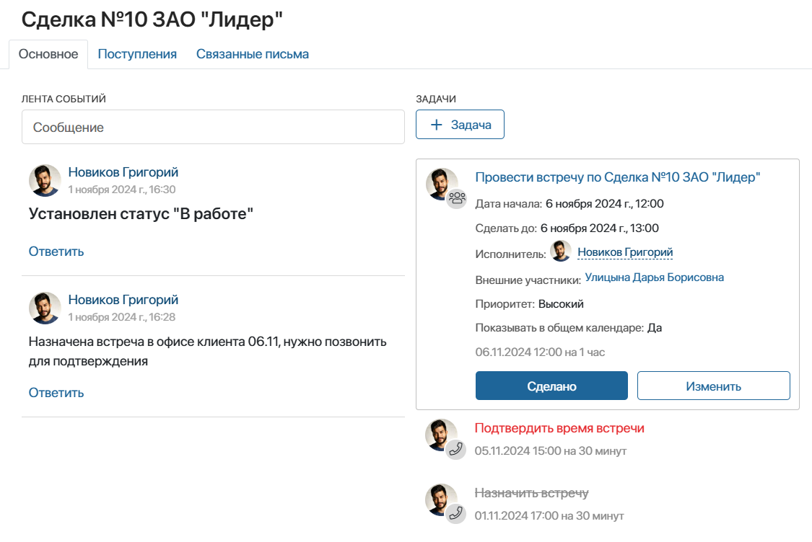
Календарь
Если при создании задачи была отмечена опция Показывать в общем календаре, она автоматически попадёт в личный календарь ответственного. Там её может посмотреть сам сотрудник, а также его руководитель.
Задачи типов Встреча и Вебинар отображаются также в календарях их участников. Таким образом, все задачи сотрудника, связанные с работой с клиентами, находятся в одном месте.
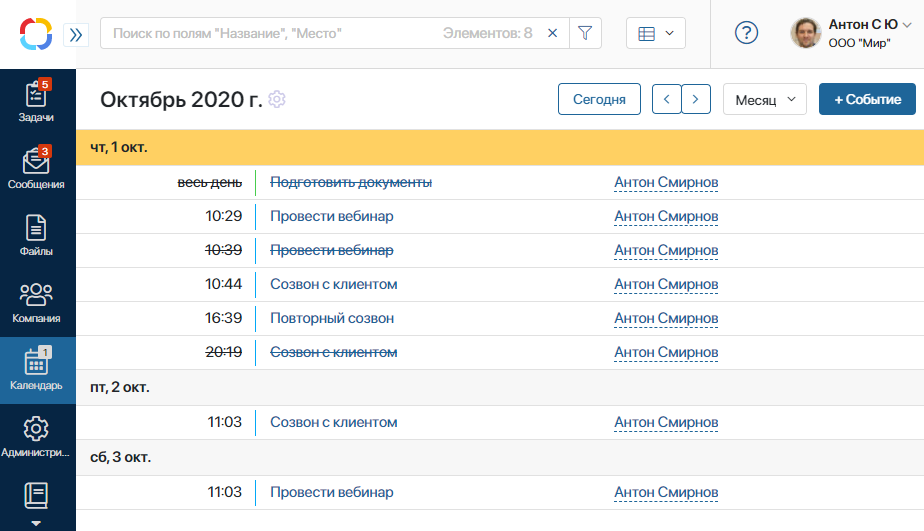
Вы можете изменять способ отображения календаря, чтобы выбрать наиболее наглядный для вас вариант.
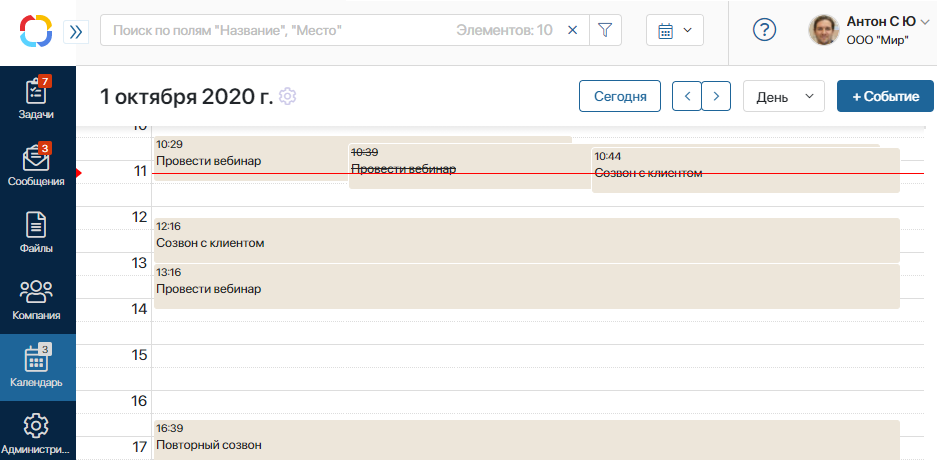
Нажав на название задачи CRM в календаре, вы откроете её карточку. Здесь удобно продолжить работу, например, завершить задачу или отредактировать её данные.
Раздел «Задачи»
Новая задача CRM появляется в группе Входящие у пользователя, который за неё отвечает. Участники встречи или вебинара увидят задачу в группе Участвую.
В разделе доступен поиск по задачам CRM. Чтобы найти все назначенные на вас задачи определённого типа, откройте окно поиска по параметрам. Затем в поле Связанный объект выберите опцию Бизнес‑процесс, укажите тип задачи и нажмите Поиск.
Вы можете также настроить отображение задач CRM отдельно от остальных назначенных на вас задач. Для этого в настройках профиля пользователя включите опцию Показывать задачи по CRM отдельно от прочих входящих задач. В левом меню раздела Задачи появится группа Задачи CRM, куда войдут все задачи, заданные в настройках типов задач CRM.
Для раздела Задачи CRM можно выбрать способ отображения: Таблица, Канбан-доска или Календарь. Для этого воспользуйтесь переключателем в правом верхнем углу страницы с задачами.
При отображении в виде таблицы вы увидите название, тип и срок завершения задачи, а также элемент приложения, по которому она была поставлена.
В календаре задачи CRM располагаются в ячейках и содержат время начала и окончания задачи, а также её название.
На канбан-доске задачи CRM распределяются по колонкам:
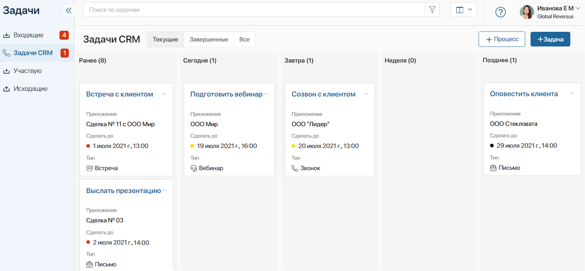
- Ранее — все незавершённые задачи CRM, назначенные на пользователя до текущей даты;
- Сегодня — все задачи CRM, поставленные на текущую дату;
- Завтра — задачи CRM, которые необходимо завершить на следующий день после текущей даты;
- Неделя — задачи CRM, которые должны быть выполнены в течение семи дней с текущей даты. Задачи на Сегодня и Завтра здесь не учитываются;
- Позднее — задачи CRM, которые необходимо завершить в срок, превышающий восемь дней с текущей даты.
В колонках задачи автоматически сортируются по времени их начала — вверху колонки будут отображаться задачи с самым близким плановым сроком выполнения.
Вы можете перенести срок задачи, перетащив её в другую колонку. Информация о переносе фиксируется в карточке задачи в ассоциированной ленте. Обратите внимание, перемещать задачи в колонку Ранее нельзя.
Работа с задачами CRM
Работать с задачами можно напрямую из карточки элемента приложения. Для каждого типа задачи предусмотрен свой набор кнопок, позволяющий совершить то или иное действие, например, отметить задачу как выполненную или изменить её. Рассмотрим подробнее задачи CRM, доступные по умолчанию. Администратор системы может изменять их, а также добавлять новые типы задач в настройках типов задач CRM.
Звонок
Для работы с назначенным звонком используются четыре действия:
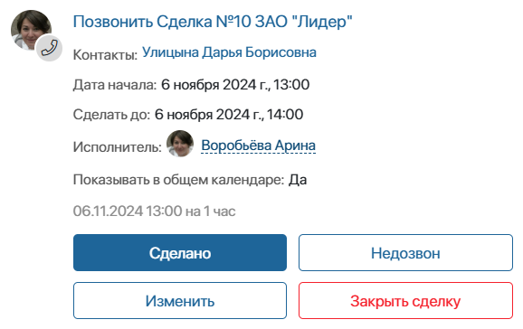
- Сделано — закрыть задачу, если звонок завершён успешно. Введите комментарий, который появится в ассоциированной ленте элемента приложения;
- Изменить — отредактировать детали задачи, переназначить её или перенести время звонка. При переназначении новый исполнитель получит оповещение в свою #ленту. Информация о внесённых изменениях фиксируется в ассоциированной ленте элемента приложения;
- Недозвон — выберите причину, по которой не удалось созвониться с клиентом. Она отобразится в ленте элемента, а задача закроется. Вы можете создать задачу для повторного звонка, установив в поле Открыть задачу на новый период? значение Да и выбрав новую дату и время. Все данные из текущей задачи продублируются в новую;
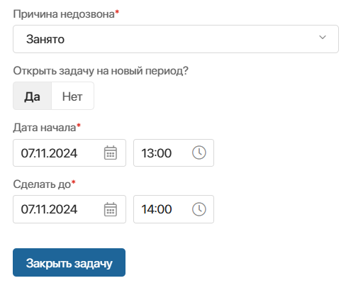
- Закрыть сделку/Закрыть лид — опция доступна только для задач CRM по сделке или лиду. Выберите причину и оставьте комментарий. После этого статус сделки автоматически сменится на Закрыта неуспешно, а лид приобретёт статус Неквалифицирован. При этом все другие задачи CRM, запланированные по отменённым сделкам и лидам, завершатся автоматически.
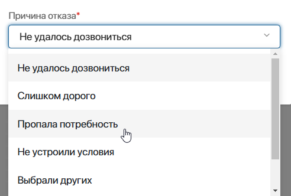
Встреча и вебинар
Работа с этими задачами похожа. Для них предусмотрены два действия — Сделано и Изменить.
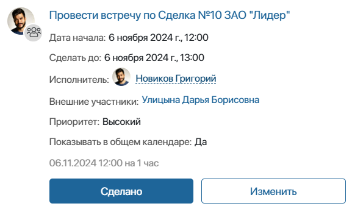
Редактируя встречу или вебинар, вы можете изменить название задачи, переназначить её или перенести, а также изменить состав участников.
Письмо
Для работы с письмом предусмотрены следующие действия:
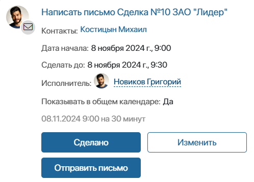
- Сделано — закрыть задачу, если письмо успешно отправлено. Введите комментарий, который сохранится в ассоциированной ленте элемента приложения, по которому поставлена задача;
- Изменить — отредактировать детали задачи, переназначить задачу или перенести время отправки письма. При переназначении новый исполнитель получит оповещение в свою #ленту. Информация о внесённых изменениях фиксируется в ассоциированной ленте элемента приложения;
- Отправить письмо — нажмите на кнопку, чтобы написать письмо во встроенном почтовом клиенте. После отправки письма задача автоматически закрывается. Опция доступна, если в задаче указан контакт для связи, а у текущего пользователя подключен персональный почтовый ящик в разделе Почта.
Задача
Работа с задачей похожа на работу с обычными задачами в системе. В ELMA365 создастся карточка задачи, которая отобразится в списке входящих задач исполнителя. Однако, в отличие от обычных поручений, эта задача также попадёт и в календарь.
Обратите внимание, если вы создадите не задачу, а пункты чек-листа, они не отобразятся в календаре, потому что у них нет исполнителя. Они удобны для планирования мелких дел по сделке. Вы можете отредактировать такую задачу и добавить исполнителя, тогда она появится в личном календаре этого сотрудника.
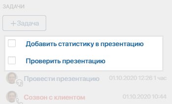
Подробнее о задачах вы можете прочитать в статье «Типы задач».